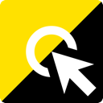
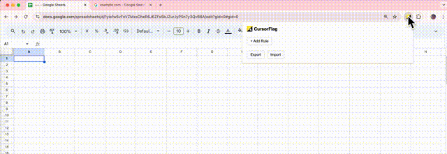
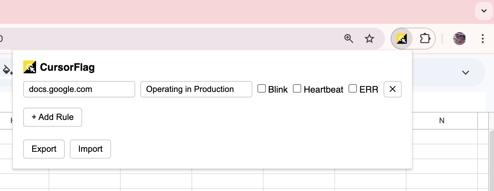
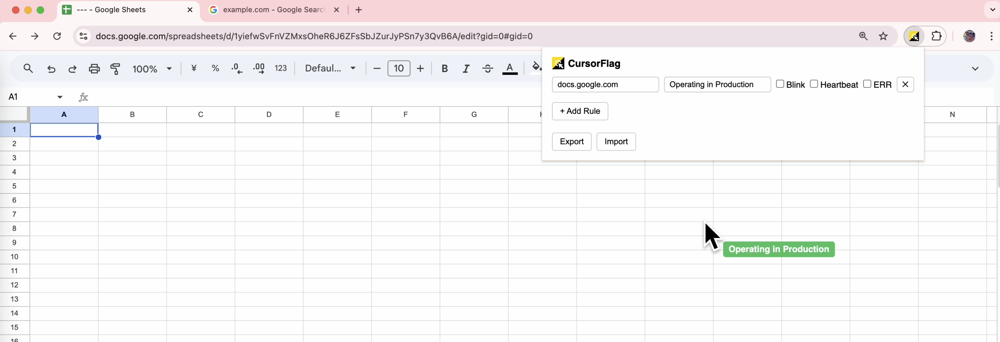
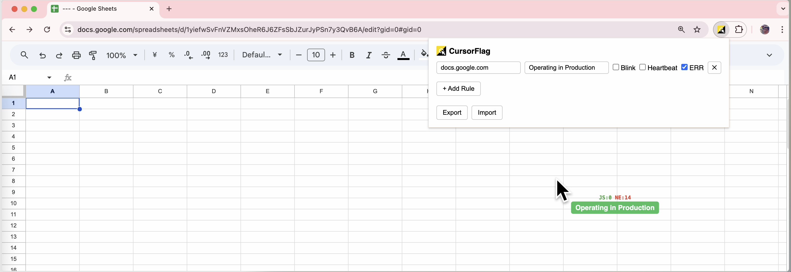

A Chrome extension that displays a label next to your cursor on specific domains. Never confuse production with staging again.
View on GitHub
Set up rules per domain with custom label text. The active tab's domain is auto-filled when adding a new rule.
Make labels stand out with blink and heartbeat animations. Label colors are automatically derived from the text.
Track JS errors and network failures in real-time with a compact counter displayed above the label.
Share your rules with teammates by exporting and importing as JSON files.



CursorFlag is not yet on the Chrome Web Store. Install manually:
pnpm install && pnpm buildchrome://extensionsdist folder